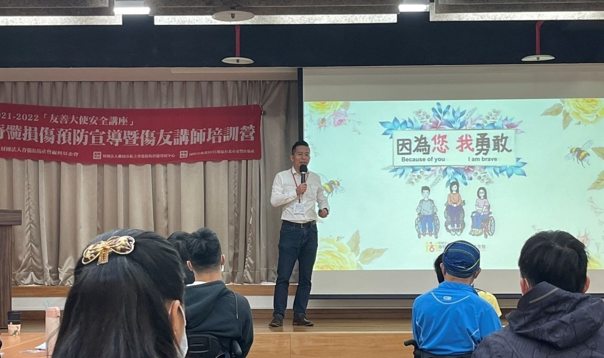
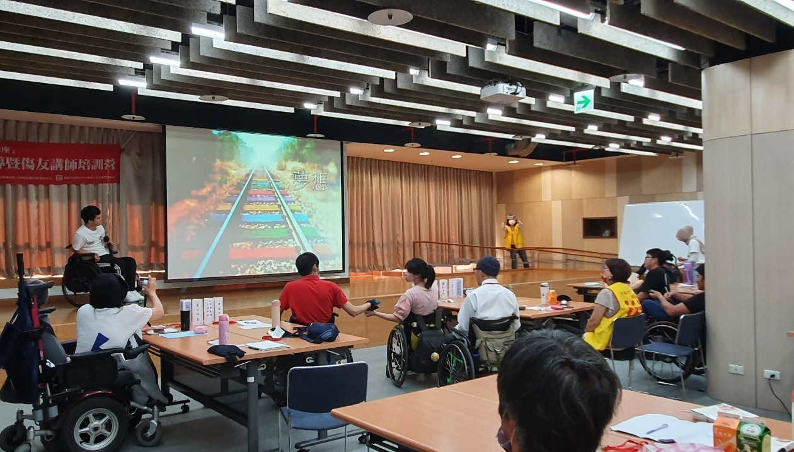
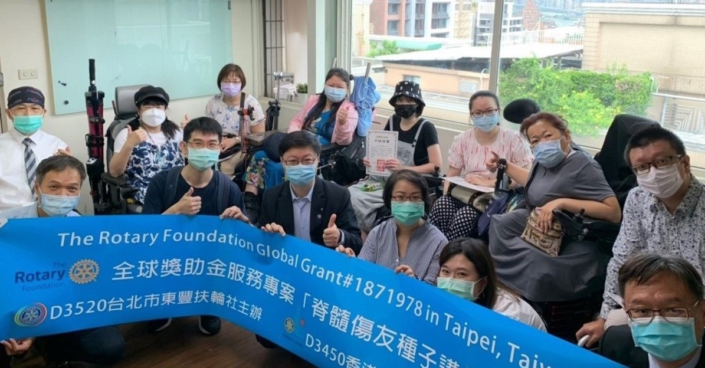
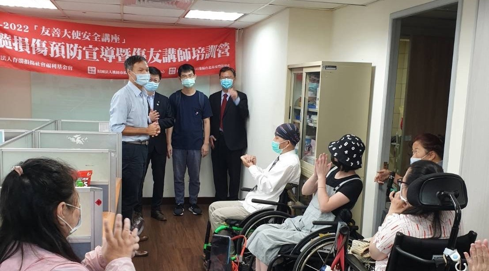

友善生命教育脊髓防治講座之介紹及目的
生活的無常性
脊髓損傷發生在我們日常生活周邊，我們身邊每一個人包括您我都有風險成為傷友。因此如何預防傷害的發生是一件極重要的事情。
生命的不屈不撓
傷友講師們在面對人生艱難的意外， 卻因此練就一身絕技功夫，因意外而意外地成為最堅強的勇者。
使勇敢的故事傳唱
本會培訓專業的12名生命講師，以自身故事向社會大眾宣傳脊髓防治與分享生命動人精髓，您可透過線上課程或實體分享邀請講師，分享他們的生命故事。
講座特色
四大核心議題
針對學校(兒童與青少年)：「交通安全緊急處置」
針對學校(兒童與青少年)：「肢體意外與霸凌」
針對社區(老人據點)：「老人跌倒預防與處置」
針對機關及團體職場：「職場災害預防與應對」
演講方式彈性
1.傳統演講：派案給傷友講師至各學校、民間團體、
社區、企業等進行預防脊損的實體宣導演講。
2. 線上演講：因應(COVID-19)疫情的影響
運用線上會議網絡進行宣導演講。
傷友即講師
傷友講師走出人生低谷，更能以正向而生命力的心態面對。
即幽默又風趣，內容充實不冷場，臨場感十足。
演講生動活潑
演講內容以生動活潑及淺顯易懂的方式分享。
讓人輕鬆理解，笑聲絡繹不絕。
活動花絮
專業講師培訓課程
本會特聘請專業師資來培訓傷友成為專業講師，以自已獨特的生命經驗及脊髓預防的專業知識，應用在推動宣導活動上，加強民眾對自我保護與脊損者的認識，也能改變大眾對傷友族群的觀感。 在國際扶輪第3522地區台北東豐扶輪社及香港金融中心扶輪社的全力支持下，我們展開推廣脊髓損傷預防宣導「友善大使安全講座」，並舉辦了精實緊湊的六天專業培訓課程。17位學員透過專業講師的教導，完成演講大綱整理、提升自我的演講技巧、學習預防脊髓損傷的專業課程，最後經由實際演練分享親身經歷，逐漸養成一名講師的知能。
|  |  |
|---|
結訓頒證
傷友在完成課程並經過專業老師考核後，始可獲得「生命講師證書」，這是一項榮譽、更是一種使命。此次共有12名傷友成為合格講師。
我們恭禧他們，也象徵傷友講師團隊將發揮他們對社會的貢獻。
|  |  |
|---|
講師陣容
職場女強人
兩歲時得了小兒麻痺，目前以電動輪椅代步，本來內向害羞不愛說話，經過歲月的洗禮，成為擅於和人分享又愛笑的女孩。學校畢業後工作不順遂，這些挫折卻成為日後創業的養分，後來自創公司從事國際貿易，現在已經財富自由，生活重心是進行最喜歡的--旅行。 期待透過講座可以分享我的經驗，帶給大家正面的想法和歡樂!
彩繪不凡的人生
在38歲提親後突來的車禍，讓本來是水泥包商人生勝利組的我，一夕之間山河變色，未婚妻離開，肚裡的寶寶消失，四肢癱瘓一輩子要24小時看護照顧，在萬念俱灰時我曾想放棄人生。 後來體悟到要活得精采有尊嚴，唯有改變自己從正向思考出發，在一次機緣中，我學會用嘴吧咬著筆畫畫，展開了我逐夢的彩繪旅程。我想借由演講感謝幫助過我的人，也想告訴大家生命處處有危機，但也處處有轉機。
輪椅櫥神
我的興趣是烹飪，高職時參加選手培育班，替學校拿了不錯的成績。在我即將步入職場時突然的車禍，把我餐飲主廚的夢想就此打碎。在基金會社工及醫訪員的鼓勵下，參加講師培訓的課程，感謝「啟程管理顧問有限公司」三位老師嚴格的訓練，協助我們萃取生命故事， 加入脊損防治的專業知識。 希望能借由我的故事，讓更多人了解脊髓損傷、宣導交通安全的重要，避免憾事發生，也讓傷友們能逐漸走出社會。
人生就是要有球必應
16歲時因心臟手術後遺症，致使下半身癱瘓，在桃園脊髓損傷潛能發展中心復健與生活重建後，重拾信心回到校園。好不容易大學畢業卻被20間公司拒於門外，參加職訓認識脊損傷友習得造型氣球技術。 因為親身體會身障者的就業困難，在考取桃園市、新北市街頭藝人證照後，成立「有球必應社會企業」，協助身障者學習一技之長，找回生活動力。期待講座能帶給大家正能量，給傷友們支持與鼓勵!
成為更好的自己
常聽人說來日方長，卻忘了世事無常。本來喜歡上山下海愛冒險的我，因為五年前的一場車禍而改變了生活的一切…。因為自身的經驗，能體會受傷後身體的不適及神經疼痛感，希望能與剛受傷的傷友分享，讓其快速找到正確的復健途徑和觀念，所以我投入了脊損協會志工及醫訪員的工作。 上帝關了一扇門，必定會再為你開一扇窗。講座可能就是祂指派給我的特別任務，希望能幫助傷友們走出低谷。
為母則強
主修工業設計系，曾獲《2010年榮獲國際德國紅點設計獎–概念設計獎。》研究所返家路上遭酒駕追撞，致使脊髓損傷…。我熱愛並投身參與身障運動是想間接讓自己的兒子能感受到媽媽無所不能的勇氣與堅強的力量。 我創作《扭蛋人生》、《微疼痛》的部落格，希望透過創作分享自已的經驗與心情。希望能透過講座讓大家認識『脊髓損傷』，讓身障者更融入大眾。
人生只有一遍 不能砍掉重練
車禍造成頸髓損傷四肢癱瘓至今已15年，回想從一路的徬徨無助到現在的獨立自主，成長蛻變中每一步的探索都是勇氣的累積。 由於回歸社會的不適應和環境不友善，看見了自已的社會責任，熱愛學習的我出國習得專業的知識及擔任志工幫助他人，讓我看見存在的價值。期待講座可以提供過來人的經驗，也可以喚起大家對身障者平權的關注，同時創造友善的無障礙環境。
再造新夢想
以前為了最熱愛的跳舞跟打球可以通宵達旦，熱衷學校社團的活動，生活多彩多姿，大四那年出了一場車禍，讓我人生的視角由曾經的180CM變成130CM，復健治療之路漫長辛苦，還好一路有家人的支持，讓我可以重新振作起來。 目前創業經營網路生意，生活豐富又精采!期待講座可以鼓勵大家用不同的視角，看待事物，用不一樣的方式接受生命中的各種挑戰!
健康的心靈勝過健全的身體
我因早產右腳不便，小時被同學和老師霸凌，10歲後與家人移居南美洲，在當地就學遇到了好的老師和和善的朋友，學會了樂觀與平等互重，不會因外表的殘缺而自卑，後來回台就讀輔大西班牙文系，畢業後在聯合晚報上班、當過口譯員、後來成為國小老師直到退休。 本著活到老學到老的想法，所以參加講師培訓課程，希望在老師的指導下，讓我的生命更加的豐富和精彩，也讓我有回饋社會的機會。
.jpg)
把愛傳出去
幸福女人
周歲罹患小兒麻痺症，醫生宣判終生坐輪椅，開朗雙親一路支持陪伴，讓我在成長過程充滿歡喜感恩。17 歲時遇到了初戀，但因男方家人反對，15年苦戀就此夢碎，後來投入美容事業業，成為銷售VIP。如今和工殤失明的先生擁有一對寶貝兒女，日子過的滿足幸福。 期待與您分享脊髓損傷的預防知識和我如何在創業打拼、經營婚姻、教養兒女中,走出意想不到的豁達人生,陪伴您找到屬於自己的夢想與力量!
.jpg)
堅強之心
在受傷前是職業軍人，一次上班的過程中發生了車禍，成雙下肢癱瘓，這對活潑好動的我來說是一個非常大的打擊!因為購買輪椅和高雄脊損協會的前輩們認識而改變，現在在高雄從事輔具維修及醫訪員的工作。成為一名專業講師不容易，期許藉由宣導講座的活動讓大家可以重視脊髓損傷的預防工作，少一場意外就會少一個家庭破碎。
.png)